两百次重生
距地球四光年，半人马座三星。三颗太阳在彼此的引力中做无规律的三体运动，有时相距遥远，行星上便进入漫长的寒夜；有时三颗太阳同时升起，地表温度升到上千度；有时行星被甩出去，又被拉回来。三体人没有稳定的天空，他们进化出了脱水的能力：乱纪元来临时，把身体的水分排干，变成一张薄薄的皮卷，卷起来堆进山洞，等恒纪元再泡进水里复活。可即便如此，文明仍一次次被抹去，又一次次从石器和火堆里爬起——游戏中呈现过第 137 号、第 183 号、第 191 号文明，有的造出了蒸汽机，有的建起了金字塔，有的算出了三体问题无解，然后统统归零。两百多次轮回之后，三体人得出了同一个结论：这颗行星迟早会毁灭，他们必须找到一个新家。
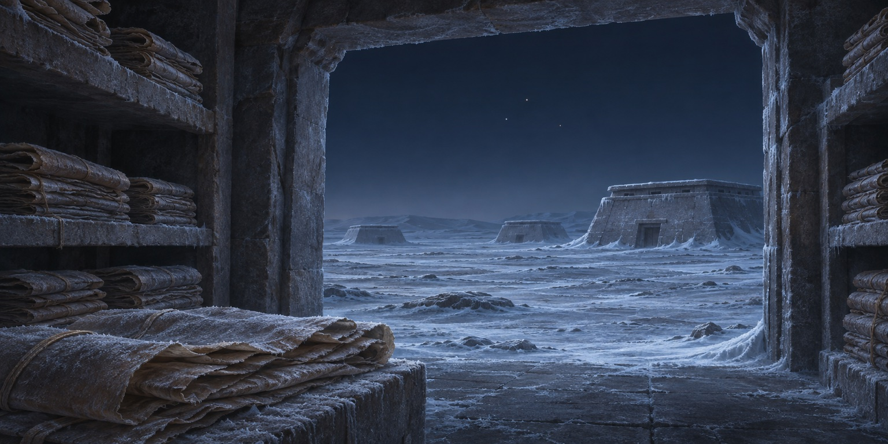
魔法师之死
君士坦丁堡陷落前，拜占庭皇帝君士坦丁十一世召见了狄奥伦娜。她声称能隔着封闭的墙壁取物，并取出一名战俘的大脑，证明自己的能力。皇帝于是命她刺杀奥斯曼苏丹穆罕默德二世，许诺成功后封她为圣女。她没有完成任务：四维空间碎片漂离地球，能力随之消失，她最终被杀。开篇看似巫术的事件，直到后来人类接触四维空间时，才有了可以理解的物理解释。
父亲的死
批斗会上，物理学教授叶哲泰被四个十几岁的女学生用皮带轮流抽打。他不肯低头，至死不肯承认“相对论是资产阶级的”。妻子绍琳上台揭发他，说他“用唯心主义毒害青年”。女儿叶文洁站在台下，看着父亲的血一滴一滴落在讲台上。父亲死后，母亲改嫁，妹妹叶文雪在武斗中被打死。叶文洁被下放到内蒙古生产建设兵团，后来又转到大兴安岭的林场。她二十三岁，已经不再相信任何宏大的词。
寂静的春天
在林场，叶文洁遇到《大生产报》记者白沐霖。他借给她一本英文书——蕾切尔·卡逊的《寂静的春天》，书里写人类用农药杀死了鸟、鱼、昆虫，最后杀死自己。叶文洁第一次读到“人类是在毁灭自己”这样的句子，觉得被人说中了心事。白沐霖要写一封信反映林场的问题，让她帮忙抄写。信寄出后出了事，上面来查，白沐霖为了自保，说信是叶文洁写的，还揭发她“偷看禁书”。叶文洁被关押、审讯、批斗，在零下三十度的夜里被人往身上泼水。她后来在回忆里说：那是我第一次知道，人可以为了活下去，把另一个人推下去。
太阳的耳朵
叶文洁因为一篇关于太阳活动的论文，被红岸基地的政委雷志成看中，调入这个绝密工程。红岸对外是监听站，实际任务是寻找外星文明。基地里有一面巨大的抛物面天线，能把信号打进太空。叶文洁在这里读到一个被忽略的理论：太阳的日冕层在某些条件下会像一面巨大的透镜，把地球发出的电波放大上亿倍，射向恒星际。也就是说，人类不需要造一个太阳那么大的发射器，只要对着太阳喊，太阳会替你把声音传出去。她做了计算，做了试验，证明这是真的。人类第一次拥有了向宇宙喊话的能力——而这个能力一直摆在所有人面前，只是没人相信它。

第一次呼喊
叶文洁趁基地设备检修、监控最松的时刻，把发射功率调到最大，将一段包含地球文明信息的电波射向太阳。她按了大约八秒钟。信号被日冕层放大、反射，以光速飞向宇宙深处。她知道这违反了一切纪律，也知道这可能永远没有回音。她甚至没有想清楚自己希望有回音，还是希望没有。八年后，回音来了，来的却是一句警告。
不要回答
地球发出的信号经过约四年的航行，抵达三体世界。1379 号监听员从信息中看到了一个温和、适宜生命的世界，也知道三体文明会试图占领它。他冒着被惩罚的危险向地球发出警告，要求不要继续回答：单次来信尚不足以确认距离，若地球回信，三体方面就可能锁定其位置。又经过约四年，这份警告才抵达红岸基地。
叶文洁的回答
叶文洁收到了警告，也读懂了警告背后的恐惧——一个文明在害怕另一个文明，这本身就说明了很多。她没有犹豫，把功率推到极限，回了一段更长的话：“到这里来，我将帮助你们获得这个世界。我的文明已无力解决自己的问题，需要你们的力量来介入。”按下发射键的那一刻，她觉得自己在替人类做一件正确的事。三十年后她在审讯室里说：我点燃了火，却控制不了它。她没有说后悔，只是说，如果再来一次，她还是会按下去。
杀夫
叶文洁在红岸与总工程师杨卫宁结婚，生下女儿杨冬。杨卫宁是她父亲的学生，温和、木讷，是真心待她好的人。1979 年，政委雷志成在设备检修记录里发现了她私自向太阳发射信号的痕迹，杨卫宁也在场。他们约她到雷达峰顶谈这件事。站在悬崖边，叶文洁看着两个背对她检查安全绳的男人，做出了决定。她割断了绳索。两个人从几百米高的悬崖上坠下去，没有喊出声。她站在崖边，风很大，她摸了摸自己的肚子——那里有杨冬。这是她第一次亲手杀人，也是她彻底跨过那条线的一刻。此后她再也没有回头。
舰队与智子
三体世界决定倾尽全部资源入侵地球。他们建造了第一舰队，一千艘战舰，航程四百五十年。但四百年太长了，长到人类可能在这期间发生技术爆炸，反过来超过他们。于是他们启动了“智子工程”：把一个质子二维展开，蚀刻成一台超级计算机，再折叠回十一维，以光速发射到地球。两颗智子先于舰队抵达太阳系，一颗钻进加速器，把粒子对撞的结果搅乱，让人类永远无法突破高能物理；一颗悬在所有人头顶，看得见一切、听得见一切，唯独读不到人的思想。剑与锁，同时出鞘。人类还有四百年，但四百年里，他们只能原地踏步。
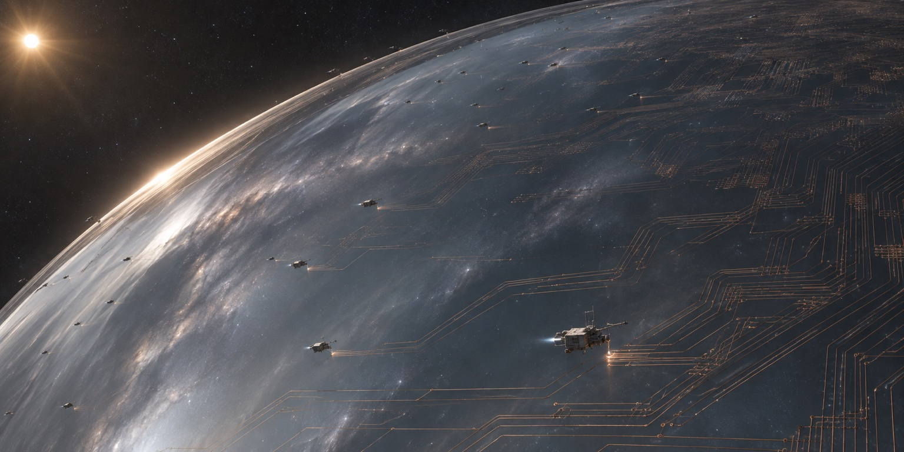
其一把一个质子展开
智子的制造方式近乎神迹：把一个质子从十一维展开到二维，它的面积会大到一个城市那么大，像一张铺开的薄膜。三体人在上面蚀刻集成电路，刻完之后再把它折叠回十一维——于是它重新变成一个质子大小的东西，却是一台超级计算机。它没有质量，能以光速飞行，能穿透任何物质。
其二两颗，两种工作
三体世界造了两颗。一颗留在母星，负责计算和通讯；另一颗（后来是两颗）被发射到地球。到地球后，一颗钻进高能加速器的管道，把粒子对撞的结果搅乱——人类每次实验都得到不同的数据，物理学的基础被抽走了；另一颗悬在空中，看得见一切、听得见一切。
其三唯一的盲区
智子能读任何一本书、任何一台电脑、任何一句话，唯独读不到人的思想。人类很快想明白了这一点，于是把所有赌注押在这个唯一的盲区上——这是面壁计划的全部逻辑起点。三体世界也知道这一点，所以他们开始学着理解人心。
内奸
叶文洁在西北某地遇到伊文斯，一个因为目睹石油泄漏而彻底绝望的富二代。他相信人类是地球的癌症，必须被清除。两人一拍即合，创立地球三体组织（ETO）。伊文斯出钱，叶文洁出思想，总部设在六万吨巨轮“审判日”号上，靠着智子的实时通讯与三体世界联络。组织很快分裂成三派：降临派，希望三体人毁灭人类，伊文斯是领袖；拯救派，希望三体人来改造人类，多为高级知识分子；幸存派，提前为三体人服务，换取自己活命。人类第一次有了内奸，而且是最深的那一种——他们并不恨人类，只是对人类失望透顶，失望到宁愿让一个外星文明来接管。
三体游戏
ETO 开发了一款名为《三体》的虚拟现实游戏，用来筛选对三体世界有认同感的人。玩家戴上 V 装具，进入一个荒诞的世界：周文王用阴阳五行解释太阳的运行，墨子造出巨大的机械宇宙模型，哥白尼在教皇面前论证三颗太阳的规律，牛顿、莱布尼茨、冯·诺依曼轮番登场。玩家会经历乱纪元的严寒、三日凌空的大火、大撕裂的地壳崩裂，一次次死去，一次次重来。能通关的人，说明他已经理解并接受了三体世界的绝望——这样的人，会被邀请参加一场真实的聚会。
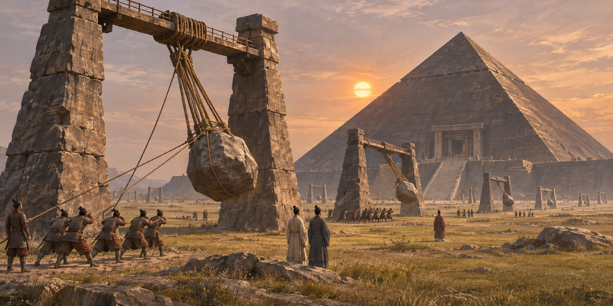
其一周文王
游戏的第一关，玩家遇到周文王。他用阴阳五行解释太阳的运行，预测下一次恒纪元的时间。他算错了，文明在严寒中毁灭。玩家第一次体验到：在这个世界里，连“规律”本身都可能是错的。
其二墨子
第二关，墨子造了一个巨大的机械宇宙模型，用齿轮和轴承模拟三颗太阳的运动。模型运转得很好，直到三日凌空，一切被烧成灰。墨子至死相信，只要模型足够精确，就能预测未来。
其三哥白尼
第三关，哥白尼在教皇面前论证：这个世界有三颗太阳，它们的运动没有规律。他被烧死，但他说的（基本上）是对的。玩家在这里第一次接近真相：三体世界的问题不是技术不够，是物理本身无解。
其四人列计算机
最后一关，秦始皇的三千万士兵组成人列计算机，用黑白旗帜做逻辑运算，试图算出三体问题的稳定解。运算进行到一半，一颗太阳升起，方阵被烤成焦土。三千万人，算了几个时辰，答案还没出来。
倒计时
纳米科学家汪淼被警官史强拉进“科学边界”案件：近一年，一批顶尖科学家接连自杀，遗书里都写着“物理学不存在了”。汪淼被请去卧底，接触这个神秘学术组织。很快，他发现自己拍的照片上出现了一串倒计时，从一百多个小时开始跳。他去看医生，做检查，用 1200 倍显微镜看自己的视网膜，什么也没有。倒计时只在他一个人的眼睛里。与此同时，全世界的高能加速器都出现了无法解释的异常：同样的实验，结果每次都不一样。人类探索微观世界的路，被人从另一头堵死了。
宇宙闪烁
科学边界的成员申玉菲告诉汪淼：停下纳米项目，倒计时就会停。汪淼不信，坚持实验，倒计时归零。那一夜，他按申玉菲的指示，在凌晨三点到郊外观测宇宙背景辐射。他戴上一副特制的 3K 眼镜，看见整个天空在他眼前闪烁——那不是星光的闪烁，是整个宇宙的亮度在同步明灭，节奏像一段摩尔斯电码。而且只有他看得见：他让同伴看，同伴只看见普通的夜空。宇宙在为他一个人演戏。那一刻他明白了：敌人不在四光年外，敌人已经在这里，而且它的能力远超人类想象。
人列计算机
汪淼在游戏里见到了最震撼的一幕：秦始皇的三千万士兵列成方阵，每人手持黑白两面旗帜，按照冯·诺依曼的设计组成一台“人列计算机”，用旗帜的翻转做逻辑运算，去计算三体问题的稳定解。运算进行到一半，一颗太阳升起，方阵被烤成焦土。他还见到了三体世界的真相：那颗行星曾经有过灿烂的文明，但一次次被三颗太阳毁灭。游戏通关后，汪淼被邀请参加 ETO 的聚会。在那里，他见到了一个坐在轮椅上、平静得像一潭水的老人——叶文洁。她说的第一句话是：欢迎你，同志。
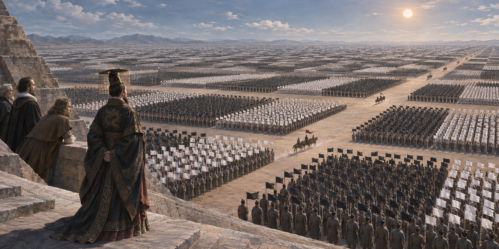
内斗
ETO 从来不是铁板一块。降临派以伊文斯为首，主张让三体人彻底毁灭人类；拯救派以申玉菲为首，希望三体人来“改造”人类，保留文明。两派的矛盾在古筝行动前夜爆发：潘寒奉伊文斯之命暗杀了申玉菲，尸体被丢在科学边界的会议室里。叶文洁这时才发现，自己创立的组织早已不听她的了——她点燃了火，火却烧向了别处。她对前来质问的汪淼说：我累了。这场内斗让人类看清了一件事：叛徒之间也会互相背叛，而且比对待敌人更狠。
两条公理
女儿杨冬自杀后，叶文洁在墓前遇到罗辑——杨冬生前的同学，一个混日子的社会学教授。她平静地讲了自己一生的思考，把它叫作“宇宙社会学”，并给出两条公理：第一，生存是文明的第一需要；第二，文明不断增长和扩张，但宇宙中的物质总量保持不变。罗辑问，就这两条？她说，还有两个重要概念：猜疑链和技术爆炸。两个文明无法确认对方是否善意，也无法确认对方是否把自己当成威胁，猜疑会一层层叠加，永远无法解除；而技术爆炸意味着，一个弱小的文明可能在几百年内超过你。罗辑当时只当是一位老人的呓语，随口答应了她的建议：去研究这门学问。这几句话，日后成了人类唯一的武器。
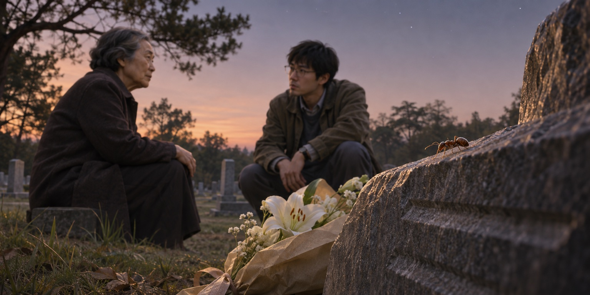
逮捕
在 ETO 的聚会现场，史强与军方突入大厅。组织成员试图以核装置掩护叶文洁离开，史强设法击散起爆结构，阻止核爆。冲突后，叶文洁与其余二百多名成员被捕。随后她在审讯中交代了红岸通信与雷志成、杨卫宁死亡的经过；这次逮捕发生在聚会现场，并非雷达峰。
古筝行动
人类决定夺取“审判日”号上的三体通讯数据。硬攻不行，船上有自毁装置。方案是用汪淼的纳米材料“飞刃”——一种只有头发丝千分之一粗、却能切开钢铁的丝——在巴拿马运河两岸拉起几十道，间距半米。行动当天，“审判日”号缓缓驶入运河，船体从船首开始被均匀地切成薄片，像被一把无形的琴弦剖开。船上的人、设备、硬盘，全部一分为二。人类拿到了三体世界的全部情报：智子的存在、舰队的航程、ETO 的名单，以及三体人对人类的判断——你们是虫子。行动代号“古筝”，因为那艘船就像被琴弦切开。
危机公开
古筝行动拿到的情报被各国高层消化了整整三个月。随后，联合国召开特别大会，向全世界直播：三体舰队已经起航，四百五十年后抵达太阳系；智子已经在地球，人类的一切都在它的监视之下；三体人的目的不是殖民，是灭绝。会场里没有人说话，只有译员的耳机里传来此起彼伏的叹息。人类历史从这一天起翻页，此后的每一年都叫“危机纪元”。所有的从容、争论与傲慢，在这一天结束了。散会时，一位代表在走廊里说了一句话，被记者录了下来：我们不是进入了一个新时代，我们是走进了一间没有出口的房间。
智子锁死
智子的可怕之处不在于它是一台计算机，而在于它能钻进任何地方。它潜伏在加速器的管道里，替人类“做”实验：粒子对撞的结果被它随意篡改，规律变成了随机，物理学的基础被抽走。它还能听见任何一句话，看见任何一个角落，从联合国会议室到地下三百米的密室。人类所有的计划、图纸、密码，在它面前都是透明的。唯一的例外是人的大脑——思想不能被读取。于是人类把所有赌注押在了这唯一的不透明地带，这也是后来“面壁计划”的全部逻辑起点。
逃亡主义
危机公开后，全球出现两种思潮：失败主义认为人类必败，不如及时行乐；逃亡主义主张造一批飞船，送一部分人逃向深空。逃亡主义很快遇到一个无解的问题：谁走，谁留？抽签？财富？权力？任何方案都会立刻引发战争。各国最终立法宣布逃亡主义非法，理由是人类必须团结一致正面迎战。这个决定在当时看是唯一可行的，但它关上了一扇门——一百多年后，当人类发现正面迎战必败时，已经没有退路。
只送大脑
在危机纪元初期，程心向 PIA 提出以沿途核爆推动辐射帆，将探测器送往三体舰队的设想。方案受制于极低的载荷上限：完整人体及其生命维持设备都太重。维德提出只运送一个低温保存的大脑，寄望三体技术能够使其恢复意识，让人类在敌方内部获得一个潜在的情报来源。这个方案把工程上的可行性与一个人的生命直接绑在了一起。
四个面壁者
既然思想无法被窥探，人类决定把赌注押在四个人的大脑里。面壁计划启动，四位面壁者被授予不受质疑的权力：他们可以调用全球资源，可以撒谎，可以不解释任何一句话，因为只要不说出来，智子就无从得知。四个人是：泰勒，前美国国防部长，一个相信技术能解决一切的人；雷迪亚兹，委内瑞拉总统，靠铁腕统治国家；希恩斯，英国物理学家，脑科学专家；罗辑，一个混日子的社会学教授，被选中只是因为他和叶文洁有过一次谈话。三体世界随即启动了“破壁计划”，为每一位面壁者配备一名破壁人。
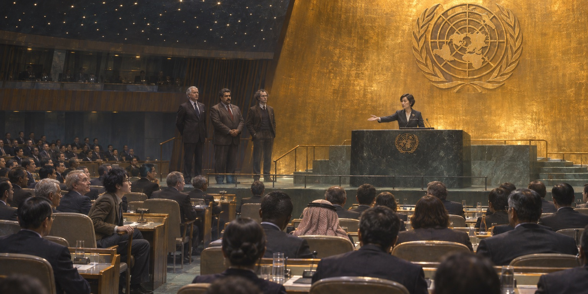
01泰勒 · 量子幽灵舰队
前美国国防部长，一个相信技术能解决一切的人。他的方案是用球状闪电制造“宏原子”，让太空军士兵在被宏原子击中后进入量子态——肉体消失，意识以量子态留存，成为一支打不死的幽灵舰队。他秘密招募了上万名士兵，告诉他们：你们会为人类而死，但不会真正死去。
02雷迪亚兹 · 恒星级氢弹
委内瑞拉总统，靠铁腕和反美立场上台。他的方案是在水星上布置大量恒星级氢弹，等三体舰队到达时引爆，让水星减速坠入太阳，引发太阳的连锁反应，把整个太阳系变成一片火海。这不是防御，是同归于尽的讹诈——他要让三体人相信，人类宁可毁灭自己，也不肯投降。
03希恩斯 · 思想钢印
英国物理学家、脑科学专家。他发明了“思想钢印”：在人脑神经元层面写入一条信念，此后无论遇到什么，这条信念都不会动摇。他给太空军士兵打上“人类必胜”。表面上这是在提振士气，实际上他真正想印进去的，是另一句话。
04罗辑 · 什么都不做
一个混日子的社会学教授，被选中只是因为他和叶文洁有过一次谈话。他没有计划，没有基地，没有军队。他行使面壁者权力，只要了一座北欧庄园和一个梦里的姑娘，然后在那儿住了五年。奇怪的是，三体世界唯一想杀的人就是他——因为只有他，让三体世界感到不安。
破壁人
面壁计划启动的同一天，三体世界启动了破壁计划。破壁人的任务不是暗杀，而是识破——他们要在全人类面前，把面壁者藏在脑子里的计划一层层剥开，证明它是什么、为什么不可能成功。三体世界为每位面壁者配备了一名破壁人，而且往往是最了解他的人：妻子、助手、多年好友。这不是技术上的对抗，而是心理上的围猎。破壁人甚至不需要赢，他们只需要让面壁者自己承认：这条路走不通。这是三体世界对人类最精准的一击——他们不缺力量，他们缺的是对人心的理解，而他们正在学习。
拒绝
罗辑在大会上当场拒绝：“我只是个普通人，我不干，你们找错人了。”会场安静了几秒，然后投票，全票通过，无视他的拒绝——面壁者的任命不需要本人同意。他冲出会场，在台阶上被一名 ETO 刺客用枪击中胸口，子弹擦过心脏，史强把他从鬼门关拖了回来。醒来后，他对联合国代表提了两个要求：给我一座北欧的庄园，再帮我找一个人——我梦里的那个姑娘。全世界都以为他疯了。只有他自己知道，他是在用面壁者的权力，换最后几年安稳日子。
陨石子弹
章北海，太空军政委，父亲是开国将军。他做过一个判断：人类若继续走化学火箭的路，四百年后必败；真正的出路是无工质辐射推进，而这条路线被三位航天界元老死死压着。他没有辩论，没有写报告。他在三个不同的城市，用陨石打磨的子弹，把这三个人分别射杀。陨石子弹没有膛线、没有弹道特征，法医只能判定为“陨石击中”。案子成了悬案。他这么做，是因为他知道，在智子的监视下，任何关于“人类必败”的言论都会被定性为失败主义，任何关于推进路线的争论都会拖上几十年。他一个人替全人类做了这个决定，然后什么也没说。
其一三次
第一次在国际航天大会的会场外，一位主张化学推进的元老被一块“从天而降的陨石”击中后脑。第二次在另一个城市的研究所停车场。第三次在第三次。三次都发生在公开场合，三次都被判定为意外——因为子弹是陨石做的，没有膛线，没有弹道，法医只能写“陨石击中”。
其二为什么是陨石
章北海研究过弹道学。普通子弹会被追查到枪、追查到人；而陨石子弹在进入人体后会碎裂，无法比对，也无法从伤口判断射距。他花了两年时间收集陨石，自己打磨，自己装填。整个过程没有第二个人知道。
其三他的判断
他不是疯子。他算过：如果人类继续走化学火箭的路，四百年后到达战场的舰队会在半小时内被摧毁；如果走无工质辐射推进，人类才有一线机会。而那三位元老掌握着航天预算的分配权，只要他们活着，路线就不会改。他没有别的办法。
梦中的姑娘
联合国真的找到了她：中央美院的学生庄颜，和罗辑梦里的画一模一样，连眼角的痣都对得上。他们在北欧的庄园里住了五年，种花、画画、看极光，有了一个女儿。罗辑知道她是被安排来的，从一开始就知道，但他选择相信——他对自己说，就算是假的，五年也够本了。五年后的一个早晨，联合国的人来了，告诉他：庄颜和孩子已经被送进冬眠，什么时候醒，取决于他什么时候开始工作。罗辑在雪地里站了很久，然后回到屋里，开始画那张他一直没画完的图。
阶梯计划
云天明身患绝症，用意外得到的钱买下 DX3906 恒星，匿名赠给大学同学程心。程心在他接受安乐死前赶到医院，请他成为阶梯计划的候选人；经过测试，他最终被选中。载着其大脑的飞行器由核爆逐级推进，却因一根帆索断裂而偏离预定航线，失去联系。地球方面将计划视为失败；它后来被三体舰队截获，则是在更晚的故事中才被证实。
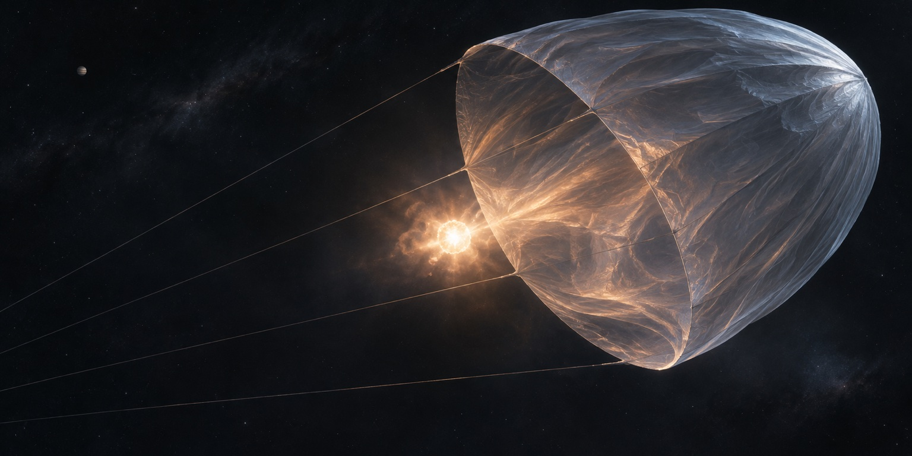
破壁 · 泰勒
泰勒试图用球状闪电和宏原子武器，把地球舰队转化为宏观量子态的幽灵舰队，再让它们对抗三体舰队。破壁人在他的住所揭示了这一真实目标：被攻击的将是人类自己的舰队。随后他向 PDC 承认计划，却连承认本身也被当作面壁者的战略欺骗。泰勒后来拜访罗辑，在庄园湖边开枪自杀。
破壁攻击自己的舰队
破壁人在泰勒家中揭露量子舰队计划，关键并非以牺牲激发愤怒，而是先把地球舰队变成宏观量子态，再寄望它们继续作战。
结局庄园湖边
泰勒发现，连他对计划的坦白都会被解释为面壁者的表演。他到罗辑的庄园寻求理解，最终在湖边自杀。
咒语
罗辑在雪夜里对着星空，向一颗编号 187J3X1 的恒星发出了一条信息：它的坐标。没有解释，没有警告，只有一串位置数据。这是他能想到的唯一验证方式——如果宇宙社会学的推论正确，一个坐标被广播出去的恒星，会被某个文明摧毁。他把一颗恒星当成实验品，也把人类的命运押在了这个实验上。发完之后，他在雪地里坐了一夜。第二天，他对外宣布：我要冬眠。
冬眠
罗辑进入冬眠。他给出的理由是：要亲眼看到结果。如果理论错了，人类还有两百年，他醒不醒都一样；如果理论对了，人类还有一线生机，而那一线生机只有他能握住。冬眠舱合上之前，他看了一眼窗外的雪，说了一句：如果她醒了，告诉她我在未来等她。没有人知道“她”是庄颜，还是别的什么。舱门关上，指示灯变绿，他把自己交给了一个还没有答案的问题。
增援未来
章北海加入“增援未来”计划，与另外三名军官一起进入冬眠，约定在末日之战前夕苏醒。他对外的理由是：未来的战争需要懂历史的人。冬眠前，他把所有能做的事都做完了——三颗陨石子弹，几份关于战舰结构的报告，还有和几位舰队指挥官恰到好处的交情。他没有告诉任何人，他已经在为逃跑做准备。他知道这会被后人称为叛逃，但他更知道，如果没有人逃，人类就真的一个也不剩。
破壁 · 雷迪亚兹
雷迪亚兹计划在水星部署大量恒星型氢弹，使水星减速坠入太阳，触发吞没内侧行星并继续扩大的连锁灾变。他想以毁掉三体文明的移民目的地进行威胁。破壁人在私下谈话中揭露了计划，并指出制造所需核弹的资源不可实现。计划公开后，雷迪亚兹以假冒的反触发装置威胁 PDC，让自己返回委内瑞拉，最终被愤怒的人群用石块杀死。
破壁毁掉移民目的地
计划以水星坠入太阳引发灾变，而非简单用氢弹直接炸毁太阳。破壁人同时指出所需核弹数量超出人类可实现的生产能力。
结局假冒的摇篮系统
雷迪亚兹以反触发装置威胁 PDC，让自己离开会场并返回祖国。所谓装置实际并未连接可毁灭城市的核弹，返回后他遭愤怒人群杀害。
大低谷
三体危机带来的恐慌、经济崩溃、秩序瓦解，把世界拖进长达六十年的萧条。各国把资源全部投入太空军备，民生被彻底榨干；粮食短缺，城市变成废墟，人们在废墟里种土豆；瘟疫、饥荒、内战轮番上演，全球人口锐减。这是人类自己造成的第二次灾难——敌人还在四光年外，人类先被自己的恐惧压垮了。后来有人总结说，大低谷证明了一件事：一个文明在面对外部威胁时，最可能死于内部。
文艺复兴
走出大低谷后，人类逐渐恢复生产与生活，把技术积累用于城市、能源和航天建设。社会从早期的生存恐慌走向对联合舰队的高度自信。但基础物理仍受智子干扰，工程能力的增长没有消除与三体文明之间的根本差距；这种自信后来在水滴面前受到毁灭性的检验。

苏醒
罗辑在危机纪元 205 年苏醒，面对的是大低谷后重建起来的世界。城市、服装与技术都已陌生，人类对舰队实力充满信心，面壁计划反而被视为历史遗留问题。史强再次出现在他身边，帮助他适应生活。对罗辑来说，两个世纪已在睡梦中过去，但他发出的那句恒星“咒语”，还没有得到一个摆在人类眼前的答案。
破壁 · 希恩斯
罗辑与希恩斯在未来苏醒后，PDC 决定终止面壁计划。听证会结束之际，山杉惠子以破壁人的身份揭示丈夫的秘密：思想钢印表面固化胜利信念，实际植入了人类必败的判断；另外四台设备也被秘密交给了钢印族。这使舰队开始担忧失败主义是否仍在军中传播。章北海并未因此被证实属于钢印族，他进入冬眠早于思想钢印的出现。
破壁失败信念
山杉惠子揭示，思想钢印写入的胜利命题被暗中反转，人类必败的判断才是希恩斯留下的真实影响。
后果对钢印族的追查
隐匿设备和成员的可能延续使舰队不安，但钢印族的规模与具体身份并未全部查明。章北海的出逃也不能证明他曾接受思想钢印。
前进四
末日之战前，章北海获授自然选择号临时执行舰长权限。他在东方延绪交接指挥后设定远航参数，以深海状态保护船员，并启动极限加速，带着飞船逃向深空。东方延绪并未收到一份伪造的最高统帅部命令；章北海利用的是已经取得的合法操作权限。四艘战舰随后奉命追击，直到联合舰队被水滴摧毁，追击者与被追击者才不得不共同面对远航的生存问题。
末日之战
联合舰队以整齐队列迎接三体探测器。丁仪随螳螂号近距离检查水滴后，意识到其表面由远超人类材料强度的强相互作用力结构构成。水滴突然发动攻击，依次贯穿战舰，舰队在极短时间内遭到毁灭性打击。蓝色空间号和青铜时代号在现场逃离；早已远航的自然选择号及四艘追击舰也没有在此战中被毁。攻击后，水滴转向太阳，封锁了人类的恒星广播通道。


其一列队与探测
人类对自身舰队的信心，使接近水滴被当作展示实力与争夺荣誉的机会。螳螂号通过机械臂捕获水滴，丁仪在检查中发现危险。
其二强相互作用力材料
水滴外壳的强度远超人类舰船材料，它直接以高速撞击贯穿目标。联合舰队的庞大数量没有转化为有效抵抗。
其三战场幸存者
现场逃离的是蓝色空间号和青铜时代号；自然选择号与四艘追击舰早已离开，属于另一条远航线索。
黑暗战役
自然选择号与四艘追击舰在末日之战后组成星舰地球。漫长远航需要的燃料和备件不足，舰员们逐渐意识到，其他飞船既是同伴，也可能是获取资源的目标。终极规律号率先以次声波氢弹攻击其余四舰，自然选择号、企业号和探空号上的人员遇难。蓝色空间号因事先将舱内抽成真空而幸存，随即反击并摧毁终极规律号。五舰最后只剩一艘，猜疑链第一次以人类内部战争的形式在深空中显现。
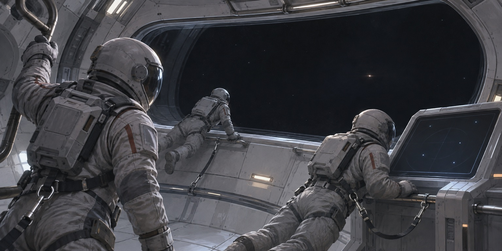
其一终极规律号先开火
它向另外四舰发射次声波氢弹。核爆产生的电磁作用使舰体振动，能量转为次声波，对舱内人员造成杀伤。
其二自然选择号遇难
章北海在准备发起攻击时稍晚一步，来袭警报响起后已来不及挽回。他与东方延绪等船员死于次声波攻击，而非被弹体直接贯穿。
其三蓝色空间号的真空防御
褚岩事先让舰员穿上航天服，把舱内抽成真空。由于缺少传播介质，次声波未造成人员伤亡；蓝色空间号立即以激光等武器反击。
其四五舰的结局
自然选择号、企业号与探空号失去舰员，终极规律号在反击中被毁。蓝色空间号收集资源后继续远航；舱内真空成为蓝色空间号保住人员的关键。
顿悟
末日之战后，人类发现恒星 187J3X1 已被光粒摧毁，罗辑的“咒语”得到验证，他也重新获得面壁者身份。在新生活五村附近的黑暗中，他向史强解释宇宙社会学：生存压力、资源有限、猜疑链与技术爆炸，使文明难以确认彼此的安全。黑暗森林并非他在雪地工程图上才偶然想到的结论，而是早年发出恒星坐标时就已用于检验的推论。

雪地工程
末日之战后，水滴持续向太阳发射电波，封锁了人类利用太阳放大电波的广播通道。雪地工程表面上是把附有油膜物质的核弹部署在太阳周围，引爆后形成尘埃云，以显示三体舰队留下的航迹。罗辑借负责工程之机，精确调整核弹的位置与触发系统，使这些尘埃云能够按预设结构遮挡太阳光。对远处观察者而言，太阳亮度的变化便可以成为另一种信息广播。
执剑人
罗辑在叶文洁与杨冬的墓前，以自己的生命维持信号控制雪地工程的反触发系统：一旦他死亡，核弹就会起爆，尘埃云按预设位置遮挡太阳，把三体世界的坐标编码进太阳光的变化中。他没有实际引爆核弹，也没有在此刻广播坐标。三体方面接受要求，停止水滴对太阳的封锁，并命令探测器与舰队改变航向。黑暗森林威慑由此建立。此后，人类建设引力波广播系统，罗辑长期担任执剑人，直到威慑纪元 62 年交接控制权。
其一尚未发出的广播
威慑成立的前提，是罗辑确实拥有发出坐标的能力，同时尚未将其发出。实际广播三体坐标发生在后来万有引力号的情节中。
其二太阳光的变化
雪地工程以尘埃云遮挡恒星光线传递信息，绕开水滴对太阳电波放大通道的封锁；广播信号不是核爆本身的电磁辐射。
其三执剑人的责任
后续威慑系统改用引力波广播，执剑人握有启动权。罗辑长期保持对三体方面可信的威慑，白色大厅中的背影表现的是这段守候。
和平
威慑建立后，三体世界开始向人类输入技术：可控核聚变、基因修复、太空电梯的升级方案。智子也不再随意窥视，人类重新拥有了隐私。世界迅速繁荣起来，树屋、软衣、舒适的地下城，艺术和爱情重新成为生活的主题。人们相信，爱可以解决一切，两个文明可以共存。只有罗辑还坐在那间地下控制室里，手边是那把剑的开关。世界感谢他，也开始害怕他——一个能决定两个世界生死的老人，本身就让人不安。人们开始在私下里说：他太老了，他太冷酷了，他不该再握着那把剑。也是在这六十年里，三体世界通过智子与人类建立了某种日常的联系：智子化身为一个穿着和服的日本女性，出现在会议、谈判、电视上，彬彬有礼，笑容得体。她教人类三体人的礼仪，也学习人类的茶道和诗歌。很多人真的相信，两个文明可以这样一直相处下去。
六十年后
程心在威慑纪元 61 年苏醒。她是因为阶梯计划受到辐射损伤而冬眠的，也是为了一个约定：云天明说过，他会在未来等她。她醒来时，世界已经和平了六十年，人们穿着柔软的衣服，住在树屋里，相信爱可以解决一切。她走进城市，看见孩子们在阳光下奔跑，看见情侣在河边接吻，看见没有军队、没有警报的街道。她哭了。有人在旁边轻声说：这一切，都是因为罗辑博士。然后那人又补了一句：可他也该歇歇了。
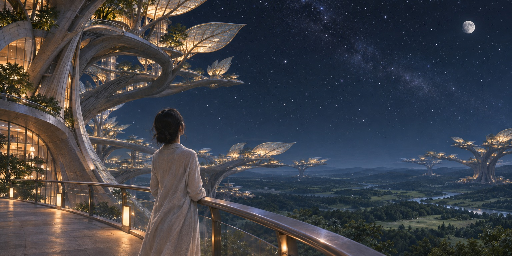
竞选
罗辑要卸任，人类需要一个新的执剑人。候选人里，程心的呼声最高。她的竞选纲领只有两个字：爱。她说，她相信两个文明可以共存，她不会轻易按下那个按钮，因为那意味着两个世界的毁灭。人们被她打动——在一个和平了六十年的世界里，冷酷才是异类，善良才是美德。她以压倒性优势当选。投票结果公布那天，有人在地下城的广场上放了一整夜的烟花。没有人去想一个问题：执剑人需要的，恰恰不是善良。
交剑
交接仪式在地下深处的控制室举行。罗辑已经一百多岁，走路需要人扶。他把那个小小的发射开关放进程心手里，只说了一句：“孩子，你看。”然后转身走进人群。人群中有人鼓掌，有人流泪，有人小声说“他终于可以休息了”。他走了几步，回头看了一眼那扇门，又继续往前走。五十四年，他每天面对同一面白墙，手里握着两个文明的生死，没有一个人替他分担过一秒。现在，他把剑交出去了。
十分钟
程心接过控制权。她坐在那把椅子上，手心出汗。几分钟后，警报响了：十颗水滴同时从不同方向冲向地球。它们的目标不是城市，是分布在全球的引力波发射器。程心的手放在按钮上，只要按下去，三体世界的坐标就会被广播出去，两个文明同归于尽。她想起了那些树屋、那些孩子、那些在阳光下接吻的情侣。她按不下去。十座发射器在几分钟内被逐个摧毁。威慑中止。她坐在椅子上，看着屏幕上跳动的红色警告，什么也做不了。三体世界赌赢了。

四维碎片
在威慑失效前后，奥尔特星云外的蓝色空间号船员利用四维空间破坏了两颗水滴，阻止其摧毁万有引力号。此后几天，两舰船员继续探索四维碎片。从四维方向观察，三维世界中封闭的舱室、人体与设备内部都可以直接看见和触及；原本在三维空间中几乎不可摧毁的水滴外壳，无法在更高维度中继续封住内部。
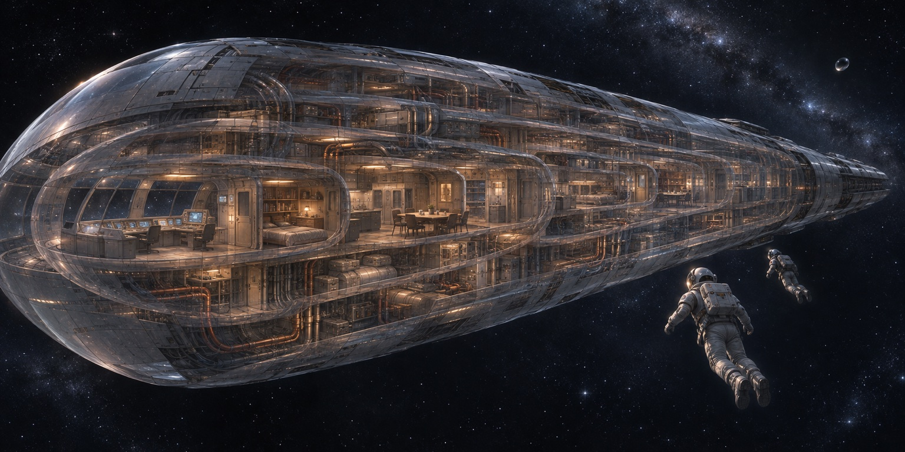
里面更高维度的敞开
船员看到封闭结构的内部，并不表示三维物体本身变成了二维薄片；他们仍保持三维形态，只是可以从原本不存在的方向接近内部。
然后破坏水滴内部
蓝色空间号船员借四维空间绕过水滴的强大外壳，直接破坏内部结构。碎片持续衰退，他们必须在四维区域消失前返回安全的三维空间。
引力波广播
在两颗水滴被破坏后，两舰人员控制了万有引力号的引力波广播系统，经投票决定启动广播，将三体世界的坐标发送到宇宙。坐标这一次真的发出了，黑暗森林威慑也变成不可撤回的现实。广播传播需要时间，地球到威慑后第一年才得知消息，大移民因此终止；发出广播与地球获知广播不是同一个时间点。
大移民
三体世界通过智子向全人类下达命令：所有人迁往澳大利亚，一年内完成。几十亿人被驱赶、被分配、被计数。飞机、轮船、步行，人们带着能带走的一切涌向那片大陆。澳大利亚的每一寸土地都挤满了人，帐篷连成海，配给站前排着几公里的队。程心在人群中，看见一个母亲把孩子举过头顶，让孩子看看这片即将属于别人的土地。有人问她：我们为什么要听他们的？她说：因为我们没有剑了。
其一四十亿人
三体世界要求全人类在一年内迁往澳大利亚。四十亿人，带着能带走的一切，涌向那片大陆。飞机、轮船、徒步，路上死了很多人，没有人统计。到达之后，所有人被分配编号，按编号领取配给。
其二帐篷城市
澳大利亚的城市容纳不下这么多人，人们在郊外搭起帐篷，帐篷连成海，一直延伸到地平线。淡水、食物、药品全部配给，每天排队几公里。有人在帐篷里出生，有人在帐篷里死去，都没有名字，只有编号。
其三一句话
程心在人群里听见一个母亲对孩子说：别怕，我们只是暂时住在这里。她后来回忆，那是她听过的最残忍的一句话——因为所有人都知道，这不是暂时的，这是永久的。
光粒
引力波广播之后，三体星系的一颗恒星遭到光粒打击。恒星失稳，喷出的物质吞没三体行星，三体母世界毁灭。地球方面在星光传来后观测到这场灾难，意识到黑暗森林打击不再只是理论。但三体文明并未就此绝灭：已经远航的舰队仍然存在，第二舰队也已掌握曲率驱动技术。
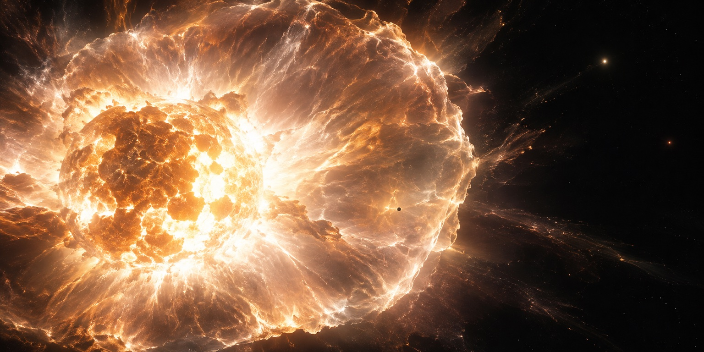
云天明的世界
广播纪元 7 年，人类得知云天明仍然活着，并提出与程心联系。阶梯飞行器如何被截获、云天明如何恢复身体，这些经过对地球方面仍然是谜团。他在三体社会中创作并传播了许多童话，把需要传递的情报隐藏在其中三个故事里，为受监视的会面作了长期准备。
三个童话
在广播纪元 7 年的受监视会面中，程心位于太阳系内的会面舱，云天明则通过远程通信出现，并非亲自来到拉格朗日点。他借叙旧讲出《王国的新画师》《饕餮海》《深水王子》。三个故事首尾相连，围绕露珠公主、长帆、针眼画师与深水王子展开；技术信息藏在多个意象的组合中，不能简单地把每个故事各对应成一项技术。

其一《王国的新画师》
冰沙王子利用针眼画师，将国王、王后与忠臣画入画中。露珠公主得到空灵画师的旋转黑伞保护，与长帆和宽姨逃离；她并未直接走入画像消失。
其二《饕餮海》
海中的饕餮鱼封锁了航路。公主一行用赫尔辛根默斯肯香皂产生泡沫，开辟通往墓岛的航道，寻找深水王子。危险在海上，并非“海里的人上岸就会死”。
其三《深水王子》
深水王子在观察者眼中的大小不随距离改变，针眼画师无法按西洋透视法把他画入画中。他回国击败冰沙王子；露珠公主最终与长帆乘船远行。
解读
情报解读委员会从三个童话中寻找相互约束的隐喻。程心与艾 AA 把香皂推动小船、雪浪纸的卷曲与熨平联系起来，明确了曲率驱动的方向；旋转黑伞、深水王子与魔泡树的意象，则共同指向光与光速。针眼画师把人画入平面的情节包含降维警告，但人类当时并未及时理解这层含义，解读远未完成。
线索香皂船与雪浪纸
香皂推动小船首先指向肥皂驱动的纸船；纸的卷曲与熨平进一步限制含义，使解读落到空间曲率驱动，而不是普通推进。
线索黑伞与深水王子
伞的转动指向恒定速度，王子不随远近改变的视大小与魔泡树的意象共同约束解释，帮助解读者锁定光速及降低光速的方向。
遗漏降维警告未被及时识破
三个童话的意象互相补充。针眼画师的平面魔法提示降维，但太阳系直到遭遇二向箔时，才明白这层关键警告。
线索低光速与安全声明
默斯肯大旋涡帮助解读者想到：若把光速降到系统逃逸速度以下，光与飞船都无法离开，整个星系便成为低光速黑域。这个主动放弃向外扩张的封闭世界，可以向宇宙表明自身不再构成威胁。
三条路
云天明情报解读后，人类面对三种生存方向：依靠巨行星的掩体计划、降低太阳系光速以发布安全声明的黑域方案，以及发展曲率驱动光速飞船的星际逃亡。三者的可行性与政治代价不同。最终，掩体计划成为公开的主要选择，光速飞船研究受到禁止；黑域所需的技术也没有及时成为可实施的全人类方案。
其一掩体
以巨行星遮挡太阳遭光粒击中后的爆发物质和辐射。它防御的是特定类型的打击，而非所有宇宙武器。
其二黑域
把内部光速降至低于系统逃逸速度，使文明无法对外扩张，以此表达自身不再构成威胁。其意义是安全声明，不是阻止一切外部攻击进入的万能护罩。
其三光速飞船
通过曲率驱动进行星际逃离，能够让部分人离开太阳系。研究受到政治与社会公平问题的阻力，后来维德仍秘密推进。
掩体计划
人类选择以木星、土星、天王星与海王星作为掩体，在巨行星背阳面建设太空城。依据太阳遭受光粒打击的模型，巨行星能够保存整体结构，并为背后的城市遮挡太阳爆发物质与辐射。建设与迁移需要数十年，因此计划逐步展开。这个方案依赖一个关键假设：攻击者仍会像摧毁三体恒星那样攻击太阳。面对降维打击，这套模型没有提供生路。

反物质子弹
维德没有放弃。他在星环城秘密建造光速飞船，用反物质子弹武装自己，与政府对抗。星环城成了一个独立王国，城墙上是电磁炮，地下是船坞。程心以“圣母”的身份赶到星环城，站在他面前，要求他放弃。她说：你这样做，会毁掉一切，会让人类提前暴露。维德看着她，问了一句：你是认真的吗？程心说是。于是他放下了枪。
维德之死
维德在被捕前说了最后一句话：“失去人性，失去很多；失去兽性，失去一切。”然后他被处决。光速飞船计划就此终止，已经建成的船体被封存。人类放弃了自己唯一的生路，而且是以最善良的名义。程心后来无数次回想那一刻，她始终认为自己做了对的选择——她不能为了逃跑而让几十万人去死。这正是最可怕的地方：她的每一个选择，都符合人类的道德；而人类的道德，在宇宙里是最昂贵的东西。
守墓人
罗辑成为冥王星地球文明博物馆的守墓人。他把《蒙娜丽莎》从墙上取下来，说这幅画就当是人类的墓碑。他在这里整理人类留下的一切：一幅画、一首诗、一台机器、一个孩子的玩具、一段录音。有人问他，你后悔吗？他说，我只是做了该做的事。一个曾经握着两个文明生死的人，最后的工作是给文明收尸。他每天擦拭那些展柜，等一个不会来的参观者。
歌者
歌者是宇宙中的一个“清理者”，职责是清扫那些暴露了坐标的文明。它每天的工作就是查看星图，标记，然后向长老申请清理许可。太阳系的坐标在它的清单上躺了很久，申请批下来的那天，它甚至有点高兴——这意味着今天的任务很简单。它哼着一首歌，从库存里取出一片二向箔，随手丢向那个星系。在歌者的文明里，这只是一次例行的保洁，成本极低，不需要理由，也不需要向任何人解释。宇宙的残酷不在于恶意，而在于这种彻底的、漫不经心的漠然。
二向箔
歌者文明在路过太阳系时，随手向这里丢出了一片二向箔。那是一片只有银行卡大小的透明薄膜，看起来无害，甚至有点漂亮。它落向太阳，然后开始“熨”这个星系：凡是接触到它的三维空间，都会向二维坍缩。歌者甚至没有为这个决定停顿一秒，就像人类踩死一只蚂蚁，不需要理由，也不需要汇报。在宇宙的尺度上，一个文明的灭亡，只是一次例行的清理。
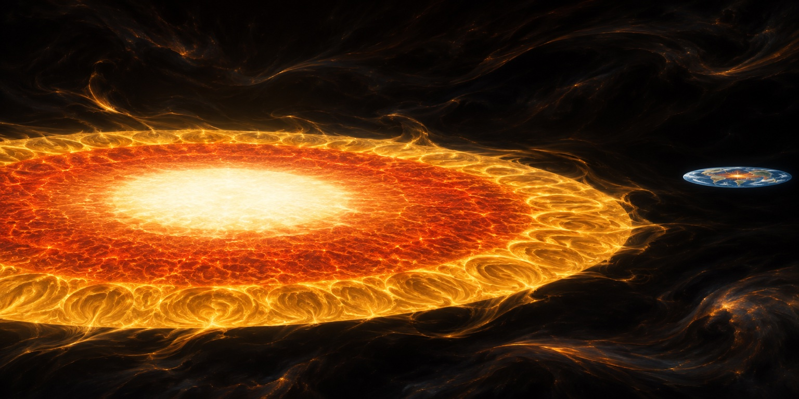
其一一片薄膜
二向箔是一片被封装的二维空间，只有银行卡大小，透明、柔软，看起来像一片会飘的玻璃纸。它的外面有一层力场封套，一旦封套解除，里面的二维空间就会向外扩散，把接触到的三维空间“吸”进二维。
其二逃逸速度
二维化的过程不可逆，而且速度越来越快。在二维化的空间里，物体的逃逸速度等于光速——也就是说，只有以光速飞行，才能逃出去。人类的飞船达不到这个速度，所以整个太阳系里，没有一艘船能逃掉。
其三一幅画
地球先被摊开，海洋变成一片蓝色的平面，大陆的轮廓像墨迹一样散开；然后是木星，它的条纹被拉成一圈圈彩色的涟漪；最后是太阳，变成一张薄薄的金色圆盘。整个太阳系变成一幅没有厚度的画，静静地挂在黑暗里。
二维化
太阳系从三维被“熨”成二维。地球、木星、一切，都变成一幅没有厚度的画。罗辑站在冥王星上，看着太阳变成一张薄薄的金色圆盘，看着木星的花纹被摊开成一圈圈彩色的涟漪。程心和艾 AA 乘“星环”号以光速逃离，回头看见整个太阳系正在被摊开，像一幅正在完成的画。那是人类文明最后的肖像：一幅画，挂在一间没有墙的房间里。
黑域
程心与艾 AA 抵达 DX3906 星系，在蓝星遇到万有引力号原船员、宇宙学研究者关一帆。程心与关一帆乘穿梭机前往灰星，AA 留在蓝星。附近死线扩散，降低了星系内的光速；穿梭机陷入低光速造成的漫长航程，程心与关一帆因此错过云天明到访。关一帆是当年参与四维探索的本人，而非万有引力号船员的后裔。
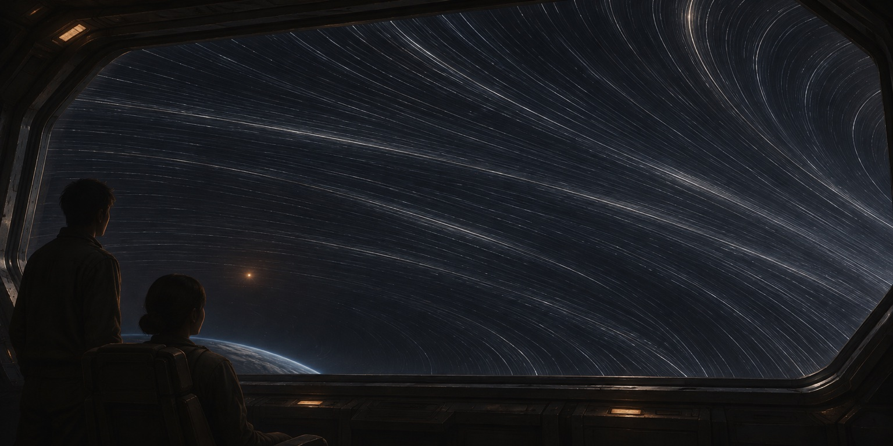
错过
在黑域里，时间几乎静止。等他们出来时，外面已经过去了一千八百九十万年。DX3906 变了，天空变了，连恒星的位置都变了。他们在一块石头上找到了云天明和艾 AA 留下的字：我们度过了幸福的一生。云天明等过程心，等了很久，最后和艾 AA 在一起了。程心与关一帆，成了宇宙里最后两个迟到的人。她在石头前站了很久，然后说：我们走吧。
归零者
在宇宙的某个尺度上，一群被称为“归零者”的文明向所有小宇宙发出了广播。他们相信，宇宙原本是十维的田园，是无数文明的战争一次次把维度降低，把质量偷走，才变成今天这副千疮百孔的样子。他们要求所有躲在小宇宙里的文明归还质量，让宇宙重新坍缩、重新爆发，回到那个光速无限、星辰无尽的时代。这是一个近乎宗教的信念，也是一场豪赌：如果质量不够，宇宙会永远膨胀下去，所有文明一起死。程心听到了这段广播，然后看着手里那个五公斤的生态球。
五公斤
在宇宙之外的 647 号小宇宙里，程心、关一帆与智子重逢。这里有一座房子、一片田野、一个永远不会落下的太阳。回归运动向所有小宇宙广播：宇宙的质量不足，无法坍缩，请归还你们带走的一切。他们决定归还，只留下一个五公斤的生态球——里面有水、有鱼、有一小片草，是程心最后舍不得放下的东西。宇宙是否还能坍缩，是否会重启，没有人知道。故事在这里停住，像一束电波消失在黑暗里。
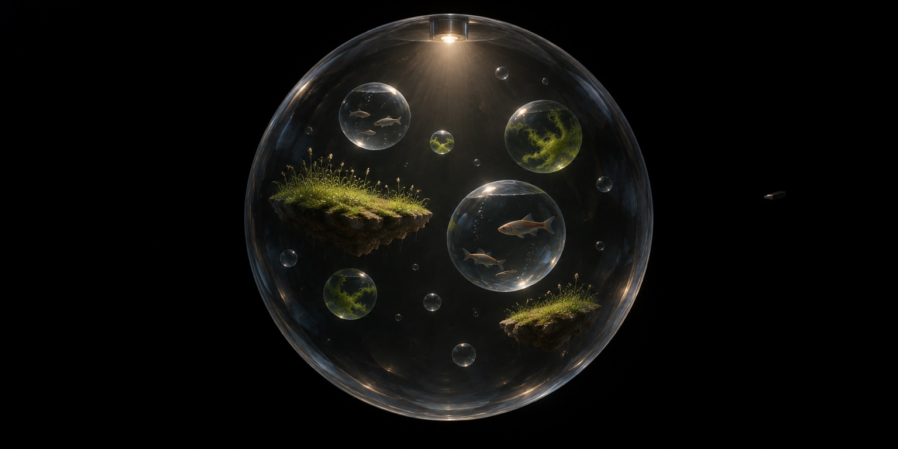